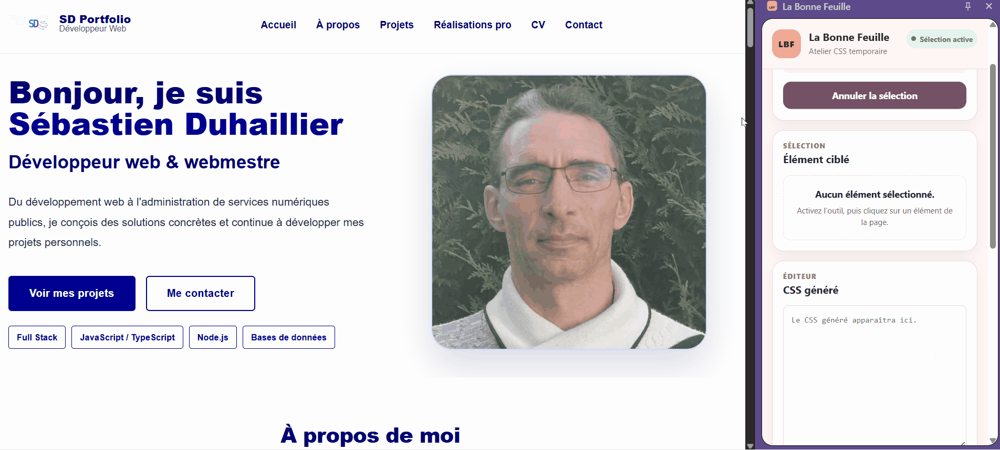

Sélectionner
Activez l’inspecteur puis cliquez sur le titre, bouton ou bloc à tester.
Extension Chrome · Atelier CSS
La Bonne Feuille permet de sélectionner un élément sur une page web, de tester visuellement son style et de récupérer le CSS généré, sans modifier le code source du site.
Disponible sur le Chrome Web Store
Un parcours simple
L’outil accélère les essais graphiques sans remplacer les outils de développement ni modifier durablement la page consultée.
Activez l’inspecteur puis cliquez sur le titre, bouton ou bloc à tester.
Modifiez les couleurs, dimensions, bordures, espacements et la typographie.
Observez immédiatement le résultat sur la page, sans toucher à ses fichiers.
Copiez le CSS ou sauvegardez une session complète pour la reprendre plus tard.
Fonctions principales
L’accès à la page est déclenché par l’utilisateur et limité à l’onglet actif.
Le CSS généré reste visible, éditable, applicable et copiable à tout moment.
Le CSS ou une session JSON peuvent être exportés puis réimportés localement.
Confidentialité
Aucun compte, aucune publicité, aucun outil d’analyse et aucun serveur applicatif. Les sessions choisies par l’utilisateur sont conservées dans le stockage local de Chrome et peuvent être supprimées depuis l’extension.
Conception
La Bonne Feuille s’appuie exclusivement sur les API Chrome nécessaires à son usage visible. La version actuelle ne demande aucune autorisation permanente couvrant l’ensemble des sites.
Version 0.2.0
Installez La Bonne Feuille depuis sa fiche officielle pour tester visuellement vos styles CSS directement dans Chrome.